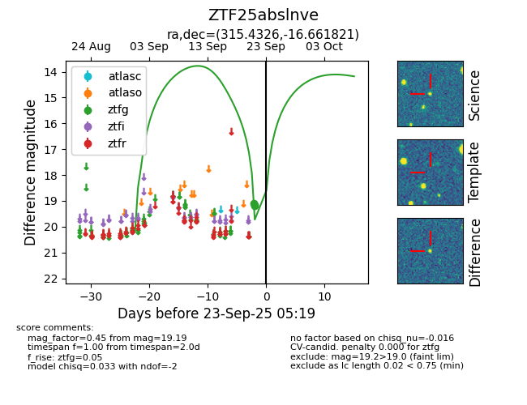
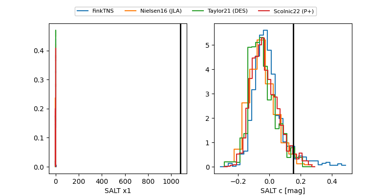

FINK: ZTF25abslnve
Lasair: ZTF25abslnve
ALeRCE: ZTF25abslnve
ZTF25abslnve (ztf,fink)
equatorial (ra, dec) = (315.4326,-16.66182)
galactic (l, b) = (31.5131,-36.14074)


last ztfg=19.19
3 ztfg detections